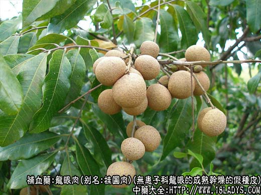
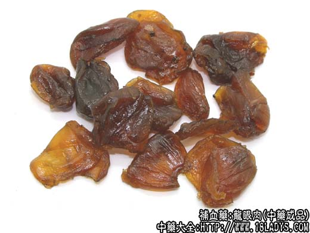
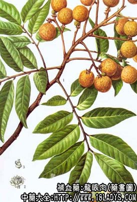

龙眼肉为常用中药。始载《神农本草经》，列为上品。
别名：桂圆肉、圆肉。
来源：为无患子科常绿乔木植物龙眼的成熟干燥或半干燥的假种皮。栽培品。
产地：主产于广西、福建、广东、四川、台湾等地。
性状鉴别：本品为囊球形纵裂的扁片块，多粘结在一起成团块状。完整的单一个体摊平呈扁片状，纵长1.5～2厘米。横宽4.5～6.3厘米，厚不及1毫米。黄棕色或棕褐色，半透明，一面显粗糙，有不太明显的细皱纹，另一面光亮，有细密的纵皱纹。肉质，柔韧而微带粘性。气微香，味甜而特殊。
以片大，肉厚，油润光亮，黄棕色，身干，味甜者为佳。
主要成分：含维生素A、B1等，另含葡萄糖、蔗糖、酒石酸等。
功效与作用：安神、益脾，其作用为镇静、健胃、滋养。又体外试验对奥杜盎氏小芽胞癣菌有抑制作用。
炮制：生用。
性味：甘、平。
归经：入心、脾经。
功能：补心脾，养血安神，益智。
主治：惊悸、健忘、失眠等症。
临床应用：主要治疗与心血虚有关的神经衰弱，表现有失眠、健忘、惊悸等症状，但单用力薄，需配合其他养血药，方如归脾汤。轻症者睡眠欠佳，易兴奋，可用龙眼肉配百合煎汤服。
此外，对一些虚证出血，如大小便下血，肺痨咳嗽，痰中带血，以及对病后体弱者的调补，龙眼肉都有一定帮助。
用量：9～15g，大剂60～60g。
处方举例：归脾汤《济生方》：黄芪9g、白术9g、党参9g、茯神9g、龙眼肉9g、广木香1.5g、远志3g、酸枣仁9g、炙甘草4.5g、生姜4.5g、红枣15g，水煎服。